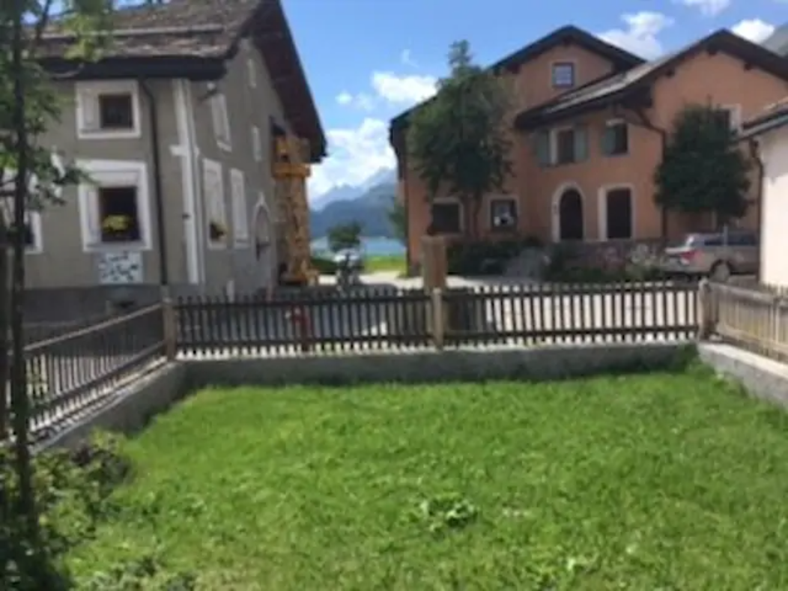
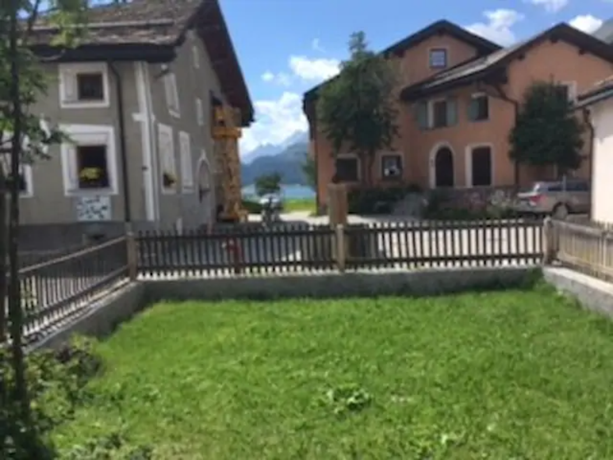

Wie bei alten Engadinerhäusern üblich ist der Sulér – die Eingangshalle – sehr geräumig und bietet neben der Garderobe auch Platz für einen Tischtennistisch oder andere Spiele.
Im kleinen, umzäunten Garten kann man in der warmen Jahreszeit draussen an der Sonne sitzen. Gartenmöbel und ein Grill sind vorhanden.

 
